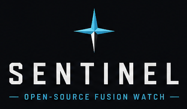

Regional activity
Publication timeline
Critical
High
Medium
Low
Situation synopsis
Strategic
Awaiting first generation cycle…
Operational
—
Tactical
—
Latest reporting
Filter reporting
Following
The morning briefing
AO High North daily analyst brief

Daily assessment · its own publication date and reporting period are shown below.
Awaiting first brief generation cycle…